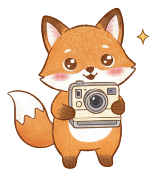
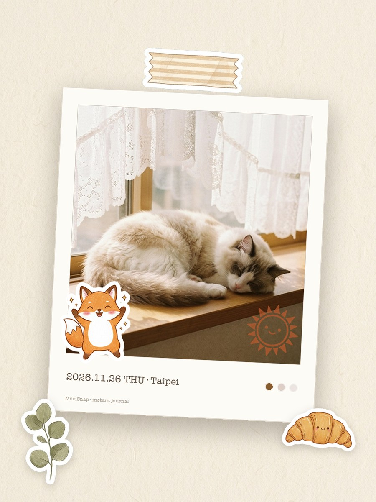

🎞️ 在家就能拍出拍貼機質感
韓系四格 ＆ 日系四格（人生四格）
不用排隊找拍貼機，打開 MoriSnap 就能拍！內建韓系經典直排四格（1×4）與日系甜美拼貼四格（2×2），支援自動倒數連拍或從相簿挑 4 張拼起來。
拍完自動套上暖色底片濾鏡、奶油格紋或可愛色塊框，再貼上插畫貼紙跟日期——朋友聚會、約會或日常 OOTD 都超好看！
韓系 1×4 經典長條
日系 2×2 甜美四格
倒數連拍 / 相簿匯入
沒有讚數、不加陌生人、沒有演算法焦慮。從暗處自動夜拍、日系透光濾鏡、心情戳印與足跡地圖，到一鍵每週小電影、4×6 列印與主畫面小工具——免費版完全零廣告、VIP 一次買斷不訂閱。

所有以下功能皆已收錄於 MoriSnap 1.0，免費版不限拍照張數、絕無廣告。
| 分類 | 功能介紹 | 方案 |
|---|---|---|
| 📸 拍照 | 隨手一拍自動變拍立得、自動配貼紙和日期、搖一搖換一組 | 免費 |
| 📸 拍照 | 暗處自動提亮＋連拍疊圖（所有濾鏡皆支援）、夜色極光 | 免費 |
| 📸 拍照 | 日系透光感濾鏡（14 款）、支援音量鍵拍照 | 免費 |
| 📸 拍照 | 列印級畫質（卡片 2160×2700 高解析度） | VIP |
| 🎞️ 卡片 | 自動色卡、活頁打孔框、車票打孔框、換日期字體（打字機／極簡／手寫風） | VIP |
| 🎞️ 卡片 | 心情天氣戳印（前 3 顆免費，共 12 顆）、手帳風標註貼紙 | 免費＋VIP |
| 🎞️ 卡片 | 26 款自動帶入當天日期的日期貼紙（手寫紙條、打字機油墨章、行李吊牌、郵票、收據票根…） | 前 10 款免費／其他 VIP |
| 📔 手帳 | 今天的代表封面（同一天自動疊成一疊）、月曆頁 | 免費 |
| 📔 手帳 | 點開照片後可以左右滑，輕鬆翻看上一張、下一張 | 免費 |
| 📔 手帳 | 自由補改日期（聊天軟體存下來的照片沒有日期時可補改，卡片日期一併更新） | 免費 |
| 📔 手帳 | 今晚才顯影：白天拍的照片先進暗房，晚上約定時間一起洗出來 | VIP |
| 📔 手帳 | 足跡地圖：只記城市不存座標、可手動選城市、4 種地圖風格與城市郵戳 | VIP |
| 🎬 回顧 | 每週／每月自動小電影、Photo Dump 範本、自動挑精華、時光放映機（喀噠聲＋幻燈機外框） | 免費＋VIP 範本 |
| 💌 分享 | 限動排版（9 種棉紙底色＋夾子、紙膠帶小裝飾，一鍵換個樣子）、4×6 超商列印版（5mm 安全邊距＋裁切虛線）、月度拍立得牆海報（限動尺寸可一鍵發限動） | 免費＋VIP（米白、淡灰免費） |
| 🧩 桌面 | 主畫面小工具：冰箱貼（去年的今天）、本月封面、磁鐵月曆、暗房倒數（開了今晚才顯影時，看暗房裡幾張、還要多久洗好） | 免費（暗房倒數搭配 VIP 今晚才顯影） |
| 🤝 親友 | 不加陌生人的共享手帳（免註冊、受邀親友免費加入且 0 iCloud 空間負擔、純看零壓力）、多選一次放進共享手帳 | 免費 |
| 🛡️ 安心 | 照片草稿（閃退也不遺失）、匯出／匯入封存檔（換手機一鍵搬家）、儲存空間管理頁 | 免費 |
| ☁️ 同步 | iCloud 個人雙機同步（照片＋自製貼紙、印章、濾鏡、牆面風格） | VIP |
| 💛 友善 | 支援系統大字設定、完整旁白（VoiceOver）輔助使用 | 免費 |
不用排隊找拍貼機，打開 MoriSnap 就能拍！內建韓系經典直排四格（1×4）與日系甜美拼貼四格（2×2），支援自動倒數連拍或從相簿挑 4 張拼起來。
拍完自動套上暖色底片濾鏡、奶油格紋或可愛色塊框，再貼上插畫貼紙跟日期——朋友聚會、約會或日常 OOTD 都超好看！

把你最愛的偶像本命、動漫角色、娃照或家裡毛孩的照片「一秒去背」，直接疊進即時相機畫面裡一起比耶合照——單張或人生四格通通可以合拍！
出門打卡咖啡廳、看演唱會、過生日都不必帶著人形立牌跑；而且去背全程都在你的手機／iPad 本機完成，照片絕不會上傳到任何伺服器。

想保護美食照、旅遊大片、手作或攝影作品？可以蓋上你的 @帳號、簽名文字，或匯入個人 Logo 圖片當印章。
拍完還能在編輯頁直接點「晴、雨、咖啡歇腳」等 12 顆心情天氣戳印，像木頭印章一樣輕輕蓋在角落！

內建超過 1,200 款原創插畫貼紙：森林小狐狸吉祥物、台灣夜市美食、毛孩日常、咖啡甜點、交通工具、餐具器皿、手帳標註貼紙，還有會隨 19 個節日與季節自動變換的季節日曆！
懶得挑？搖一搖手機小狐狸就幫你換一組；想要自己玩？單指拖拉右下角 🔄 圓點就能同時旋轉與縮放，還能用 Apple Pencil 直接手寫塗鴉加白邊！
No likes, no strangers, no feeds. From auto low-light shooting, luminous film filters, mood stamps, and a city-only footprint map to Photo Dump movies, 4×6 prints, and Home Screen widgets — zero ads even on Free, one-time VIP with no subscription.
Every feature below ships in MoriSnap 1.0 — unlimited shots and zero ads on Free.
| Area | Features | Tier |
|---|---|---|
| 📸 Camera | Instant photo cards on every snap, auto stickers & date, shake to shuffle | Free |
| 📸 Camera | Auto low-light brighten & burst stacking on every filter, plus Night Aurora | Free |
| 📸 Camera | 14 airy Japanese-inspired film filters & volume-button shutter | Free |
| 📸 Camera | Print-Grade Quality (high-resolution 2160×2700 cards) | VIP |
| 🎞️ Cards | Auto color palette dots, binder-punch & ticket-punch frames, date fonts (Typewriter / Minimal / Handwritten) | VIP |
| 🎞️ Cards | Mood & weather ink stamps (first 3 free, 12 total) & journal annotation stickers | Free + VIP |
| 🎞️ Cards | 26 live dynamic date stickers that auto-fill the photo date (handwritten strip, typewriter ink stamp, luggage tag, postage stamp, receipt stub…) | First 10 Free / VIP |
| 📔 Diary | Daily cover stack (same-day shots stack neatly) & monthly calendar view | Free |
| 📔 Diary | Swipe left or right after opening a photo to browse previous & next shots | Free |
| 📔 Diary | Edit photo date anytime (great for photos saved from chat apps — updates the printed card date too) | Free |
| 📔 Diary | Develop Tonight: daytime camera snaps rest in a cozy darkroom and develop together in the evening | VIP |
| 📔 Diary | Footprint Map: city-only memory tracking, manual city picker, 4 map paper styles & city postmarks | VIP |
| 🎬 Recaps | Weekly/Monthly auto movies, Photo Dump template, on-device AI highlight picker, Slide Projector mode | Free + VIP Styles |
| 💌 Share | Story layouts (9 cotton-paper shades + clip & washi-tape accents, one-tap shuffle), 4×6 kiosk print sheets (5mm safe margins + cut lines), Monthly Wall Poster (one-tap Story sharing) | Free + VIP (Cream & Gray Free) |
| 🧩 Widgets | Home Screen widgets: Fridge Magnet ("On This Day"), Month Cover, Magnet Calendar, and Darkroom Countdown (tracks pending photos & time left when Develop Tonight is on) | Free (Darkroom widget pairs with VIP) |
| 🤝 Loved Ones | Stranger-free Shared Albums (no signup, invited friends join free with 0 GB iCloud used, zero posting pressure) & batch move multiple shots at once | Free |
| 🛡️ Peace | Auto-saved photo drafts, one-tap export/import backup archive for switching phones, Storage manager | Free |
| ☁️ Sync | Private iCloud Sync across devices (photos + custom cutouts, stamps, custom filters & wall themes) | VIP |
| 💛 Care | Dynamic Type large-text support & VoiceOver accessibility | Free |
No need to queue at a booth — shoot right inside MoriSnap! Switch between the iconic Korean vertical 4-Cut strip (1×4) and cute Japanese 2×2 collage grid with countdown bursts or 4 photos from your library.
Warm film tones, cozy frames, illustrated stickers, and dates land automatically — effortless for hangouts, dates, or daily OOTD snaps.
Lift your favorite idol, anime character, plushie, or pet out of any photo in one tap and place them right inside your live camera viewfinder — works for single cards and 4-Cut booths alike!
Cafe trips, concerts, or birthdays without carrying acrylic stands around — and subject lifting runs 100% on your device, so your photos are never uploaded anywhere.
Protect your favorite food, travel, or craft shots with your own @handle, signature text, or custom logo image stamp.
Plus tap Sunny, Rainy, or Coffee Break right after shooting to stamp one of 12 ink-textured mood & weather stamps into your card corner!
Over 1,200 original illustrated stickers: Little Fox, Taiwanese night-market snacks, cozy pets, cafe treats, travel vehicles, tableware, journal annotations, plus 19 rotating holidays and seasons!
Feeling lazy? Shake your phone to shuffle a fresh set. Drag the bottom-right 🔄 handle with one finger to rotate & resize, or doodle with Apple Pencil and add a crisp white sticker border.

VIP members can send wishes anytime — tell Little Fox what you'd love to see in future free updates 🦊
いいねも知らない人もいない静かな写真日記。暗所オート撮影、透け感フィルター、木製風スタンプ、都市だけの足あとマップ、Photo Dump ムービー、4×6 プリント、ホーム画面ウィジェットまで。無料版も広告ゼロ・VIP は買い切りです。
以下の機能はすべて MoriSnap 1.0 に収録。無料版も撮影枚数無制限・広告ゼロです。
| カテゴリ | 機能内容 | プラン |
|---|---|---|
| 📸 撮影 | 撮るだけでフォトカード化、ステッカー＆日付を自動配置、スマホを振ってチェンジ | 無料 |
| 📸 撮影 | 暗所オート補正＋連写合成（全フィルター対応）、夜色オーロラ | 無料 |
| 📸 撮影 | 透明感フィルター（14 種）、音量ボタンシャッター対応 | 無料 |
| 📸 撮影 | プリント向け高画質（カード 2160×2700） | VIP |
| 🎞️ カード | 自動カラーパレット、ルーズリーフ＆切符パンチ枠、日付フォント切替（タイプライター／ミニマル／手書き風） | VIP |
| 🎞️ カード | 気分・天気スタンプ（最初の 3 種無料・全 12 種）、手帳風マーキングステッカー | 無料＋VIP |
| 🎞️ カード | 撮影日を自動入力する 26 種の日付ステッカー（手書き紙片・タイプライター印・荷物タグ・切手・レシート風…） | 最初の 10 種無料／他 VIP |
| 📔 手帳 | 今日の代表表紙（同じ日の写真を重ねて整理）、カレンダービュー | 無料 |
| 📔 手帳 | 写真を開いたまま左右スワイプで前後の写真をサクサク閲覧 | 無料 |
| 📔 手帳 | 日付のあと変更（チャットアプリ保存で日付が消えた写真も修正でき、カードの日付も再印字） | 無料 |
| 📔 手帳 | 今夜現像：昼に撮った写真を暗室にあずけ、夜まとめて現像 | VIP |
| 📔 手帳 | 足あとマップ：都市名だけを記録、手動都市選択、4 種の紙マップ＆都市消印 | VIP |
| 🎬 振り返り | 週間・月間オートムービー、リズム連動フォトダンプ、自動ハイライト選択、映写機モード（カチッ音＆スライド枠） | 無料＋VIP 枠 |
| 💌 シェア | ストーリー用レイアウト（9 色の棉紙＋クリップ・マステ飾り、ワンタップ着せ替え）、4×6 コンビニプリント用（5mm 余白＋点線）、月間ウォールポスター（ストーリー用サイズはワンタップ共有） | 無料＋VIP（オフ白・薄灰無料） |
| 🧩 ホーム | ウィジェット：冷蔵庫マグネット（去年の今日）、今月の表紙、マグネットカレンダー、暗室カウントダウン（今夜現像オン時の枚数と残り時間） | 無料（暗室は VIP 今夜現像と連携） |
| 🤝 大切な人 | 知らない人のいない共有手帳（登録不要・招待された側も無料＆iCloud 容量消費ゼロ・見る専 OK）、複数選択でまとめて追加 | 無料 |
| 🛡️ 安心 | 写真の下書き自動保護、機種変更用アーカイブ書き出し／読み込み、ストレージ管理 | 無料 |
| ☁️ 同期 | iCloud 個人同期（写真＋自作切り抜き、スタンプ、カスタムフィルター、壁テーマ） | VIP |
| 💛 配慮 | 大きな文字サイズ対応、VoiceOver（読み上げ）対応 | 無料 |
フォトブースに並ばなくても、MoriSnap ならすぐ撮れる！定番の韓国風タテ 4 コマ（1×4）と、かわいい日本風スクエア 4 コマ（2×2）を収録。カウントダウン連写もアルバムからの 4 枚選びも OK。
あたたかいフィルム色味とフレーム、イラストステッカーや日付まで一気におしゃれに仕上がります。
大好きな推し、キャラクター、ぬいぐるみや愛犬・愛猫の写真を 1 秒で切り抜いて、リアルタイムのカメラ画面にそのまま重ねて撮影！1 枚写真も 4 カットも一緒に撮れます。
アクスタを忘れてもカフェやライブ会場で記念撮影。しかも切り抜きはすべて端末内で完結するので、大切な写真が外部に送られることはありません。
カフェ写真、旅行カット、ハンドメイド作品の無断転載対策に、@アカウント名 や自作ロゴ画像をスタンプとして入れられます。
さらに撮影後、晴れ・雨・コーヒー一息など全 12 種の木製風インクスタンプをカードの角にポンと押せます！
子ぎつね、台湾グルメ、ペット、カフェ、乗り物、食器、手帳風マーキングまで 1,200 種以上！19 の季節・イベントに合わせて自動で切り替わります。
選ぶのが面倒ならスマホを振るだけでチェンジ。右下の 🔄 ハンドルで 1 本指回転＆サイズ変更もでき、Apple Pencil で手書きステッカーも作れます！
좋아요·알고리즘·낯선 사람 없는 고요한 포토 다이어리. 어두운 곳 자동 야간 촬영, 투명감 필터, 나무 도장 스탬프, 도시만 기록하는 발자국 지도, 비트 싱크 영상, 4×6 인화, 홈 화면 위젯까지 — 무료도 광고 0, VIP는 평생 1회 구매예요.
아래 기능은 모두 MoriSnap 1.0에 포함되어 있으며, 무료 버전도 무제한 촬영·광고 0입니다.
| 분류 | 기능 소개 | 구분 |
|---|---|---|
| 📸 촬영 | 툭 찍으면 자동 포토카드 완성, 스티커·날짜 자동 배치, 흔들어서 조합 변경 | 무료 |
| 📸 촬영 | 어두운 곳 자동 밝기 보정＋연사 합성(모든 필터 지원), 밤빛 오로라 | 무료 |
| 📸 촬영 | 맑은 필름 감성 필터(14종), 볼륨 버튼 셔터 지원 | 무료 |
| 📸 촬영 | 인화급 고화질(카드 2160×2700 해상도) | VIP |
| 🎞️ 카드 | 자동 컬러 팔레트, 바인더·티켓 펀치 프레임, 날짜 폰트(타자기 / 미니멀 / 손글씨풍) | VIP |
| 🎞️ 카드 | 기분·날씨 잉크 스탬프(앞 3종 무료, 총 12종), 다이어리 마킹 스티커 | 무료＋VIP |
| 🎞️ 카드 | 촬영 날짜가 자동 입력되는 26종 날짜 스티커(손글씨 종이 조각·타자기 잉크 도장·수하물 태그·우표·영수증…) | 앞 10종 무료 / 그 외 VIP |
| 📔 기록 | 오늘의 대표 커버(같은 날 사진을 깔끔하게 묶음), 달력 보기 | 무료 |
| 📔 기록 | 사진을 연 상태에서 좌우로 스와이프해 이전·다음 사진 바로 보기 | 무료 |
| 📔 기록 | 날짜 수정(메신저 앱에서 저장해 날짜가 사라진 사진도 복구·카드 날짜 재인쇄) | 무료 |
| 📔 기록 | 오늘 밤 현상: 낮에 찍은 사진을 암실에 맡겨두고 밤에 한꺼번에 현상 | VIP |
| 📔 기록 | 발자국 지도: 도시명만 기록, 수동 도시 선택, 4가지 종이 지도 스타일 및 도시 소인 | VIP |
| 🎬 회고 | 주간·월간 자동 영화, 비트 싱크 포토 덤프 템플릿, 하이라이트 자동 선택, 영사기 모드 | 무료＋VIP 스타일 |
| 💌 공유 | 스토리 레이아웃(9가지 코튼지 배경색＋클립·마스킹테이프 장식, 원탭 스타일 변경), 4×6 편의점 인화용(5mm 여백＋자르기 점선), 월간 월 포스터(스토리 크기 원탭 공유) | 무료＋VIP(크림·연회색 무료) |
| 🧩 홈 화면 | 위젯 4종: 냉장고 자석(작년의 오늘), 이달의 커버, 자석 달력, 암실 카운트다운(오늘 밤 현상 시 장수와 남은 시간 표시) | 무료(암실 위젯은 VIP 연동) |
| 🤝 소중한 사람 | 낯선 사람 없는 공유 다이어리(가입 없음·초대받은 상대도 무료＆iCloud 용량 0·조용히 보기만 해도 OK), 여러 장 한 번에 이동 | 무료 |
| 🛡️ 안심 | 사진 임시 저장(갑작스러운 종료 방지), 기기 변경용 아카이브 백업·복원, 저장 공간 관리 | 무료 |
| ☁️ 동기화 | iCloud 개인 동기화(사진＋자작 누끼 스티커, 스탬프, 커스텀 필터, 벽 테마) | VIP |
| 💛 배려 | 시스템 큰 글씨(Dynamic Type) 및 VoiceOver 손쉬운 사용 지원 | 무료 |
포토부스 줄 서지 않아도 OK! 클래식한 한국식 세로 4컷(1×4)과 아기자기한 일본식 2×2 네컷을 모두 지원해요. 타이머 연속 촬영은 물론 앨범에서 4장을 골라 꾸밀 수도 있어요.
따뜻한 필름 색감과 프레임, 일러스트 스티커와 날짜가 자동으로 얹어져 친구 모임이나 데이트, 데일리룩 기록에 딱이에요!
내 최애 아이돌, 캐릭터, 인형, 반려동물 사진을 1초 만에 누끼 따서 라이브 카메라 화면에 바로 띄워 함께 찍으세요! 한 장 사진도, 네컷 사진도 모두 합사진 가능해요.
포카나 아크릴 스탠드 없이도 카페·콘서트·생일 인증샷 완성! 게다가 모든 누끼 처리는 내 기기 안에서만 진행되어 사진이 외부로 전송되지 않아요.
맛집 사진, 여행 컷, 핸드메이드 작품에 @아이디나 내 로고 이미지를 스탬프로 찍어 소중한 작품을 지킬 수 있어요.
촬영 직후 편집 화면에서 맑음·비·커피 휴식 등 나무 도장 감성의 12종 기분·날씨 스탬프도 콕 찍어 보세요!
숲속 아기 여우 마스코트, 대만 야시장 먹거리, 반려동물, 카페 디저트, 교통수단, 식기류, 다이어리 마킹 스티커까지 1,200종 이상! 19가지 계절·기념일에 맞춰 자동 추천돼요.
고르기 귀찮을 땐 폰을 흔들어 새 조합으로 쓱! 오른쪽 아래 🔄 핸들로 한 손가락 회전·크기 조절도 쉽고, Apple Pencil 손글씨 스티커도 만들 수 있어요.